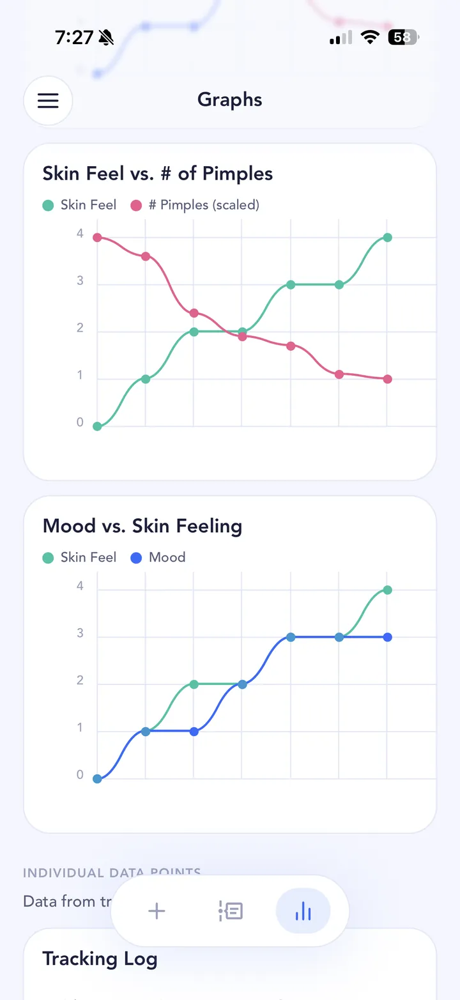
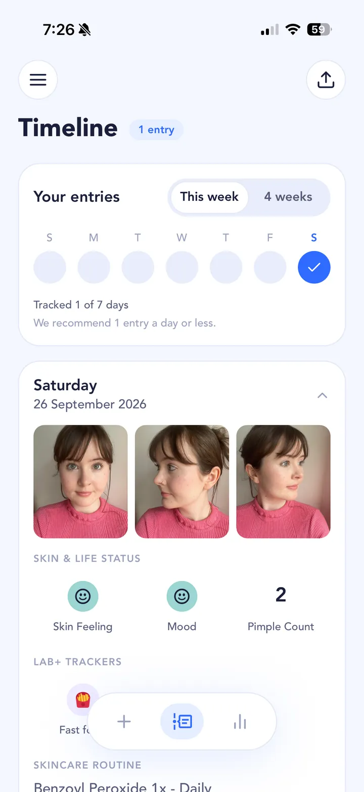
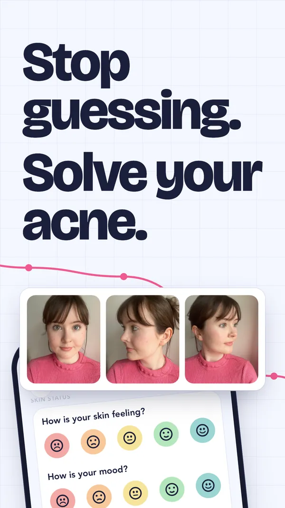
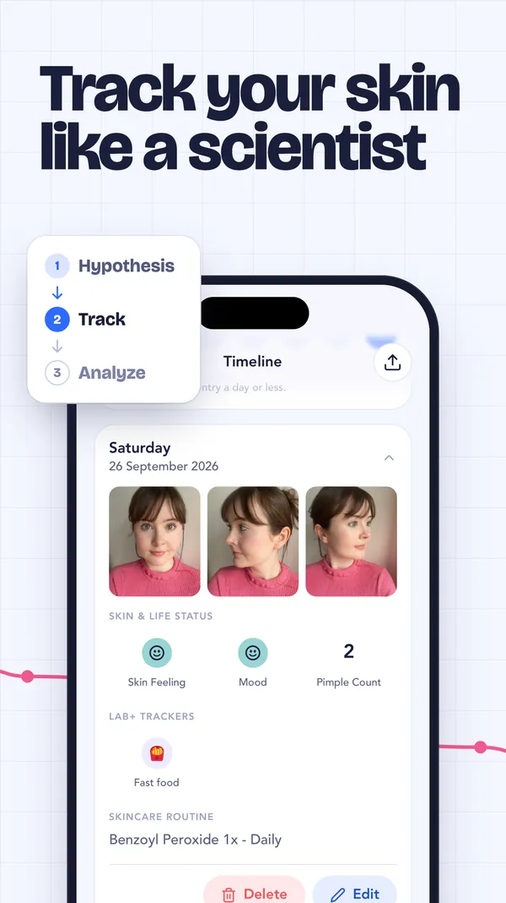
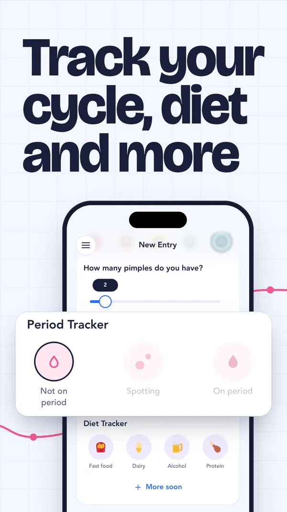
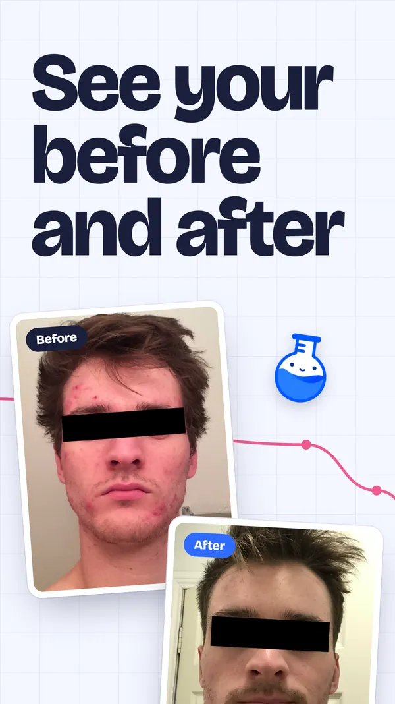
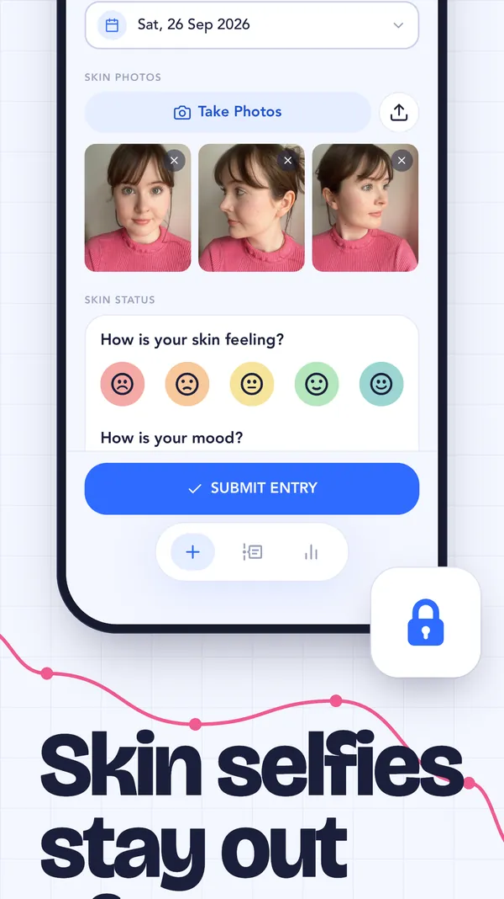
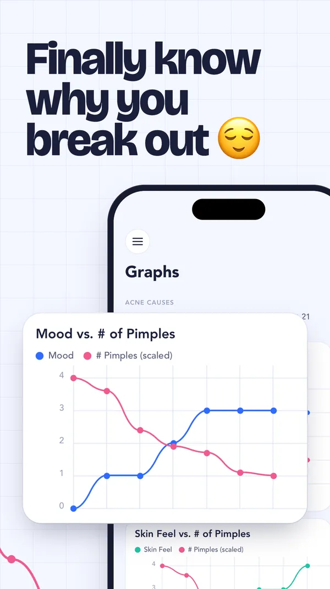
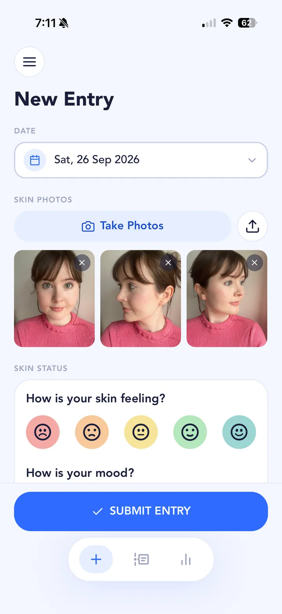
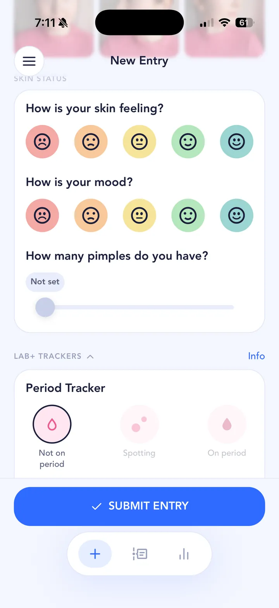

Stop guessing. Solve your acne.
SkinTheory is an acne tracker built on the scientific method. Snap three photos a day, log how your skin feels, and let your own data show you what’s behind your breakouts.
Free acne tracker app for iPhone and Android.


How is your skin feeling?
-

-

-

-

-

-

Track your skin like a scientist
Most acne advice is somebody else’s guess. SkinTheory gives you a simple loop for testing what changes your skin, using nothing but your own entries.
-
Hypothesis
Pick a suspect to test: dairy, fast food, alcohol, your cycle or a new product in your routine.
Current experiment
Does dairy make my chin break out?
- Test for
- 21 entries
- Log
- Dairy, pimple count, photos
- Keep the same
- Benzoyl peroxide, daily
-
Track
Once a day, take three photos and log your skin feeling, mood, pimple count and any suspects.

-
Analyze
Graphs line your pimples up against everything else in your last 21 entries, so you finally see why you break out.
Mood vs. # of Pimples
On a new treatment?
Track your Accutane, tretinoin or adapalene journey with daily photos, and log the gym, your bedsheets, diet and sleep alongside it. Then you’ll know whether it’s the treatment that’s working, or something else in your life.
Track an acne treatment
Track your cycle, diet and more
Hormones, food and routine changes are the usual suspects. Log them next to your skin and see which ones line up with your breakouts.
In every entry
- Three skin photos
- Skin feeling
- Mood
- Pimple count
- Skincare routine
Lab+ trackers
Everything you log is free, forever. Lab+ adds extra trackers and graphs, and you can use any 2 Lab+ trackers for free. What causes acne? See the common triggers.
Skin selfies stay out of your camera roll
Photos you take in SkinTheory stay in SkinTheory, not in your gallery or your phone’s photo memories. Show someone your holiday pics without a surprise chin close-up.
Keep your whole skin history on your phone, for as long as you want, free.
Questions people ask
The short answers. For the long ones, see the guides to acne triggers and acne treatments.
What is SkinTheory?
SkinTheory is a free acne tracker app for iPhone and Android, built on the scientific method. You take three skin photos a day, log how your skin feels and what you suspect is behind your breakouts, and its graphs show which suspects line up with your skin.
Is SkinTheory free?
Yes. SkinTheory is free, and free for all your own data, forever. Lab+ is an optional upgrade with extra trackers and graph features, and you can use any 2 Lab+ trackers for free at a time.
Is SkinTheory on iPhone and Android?
Yes. SkinTheory is on iPhone through the App Store and on Android through Google Play.
How do I find out what’s causing my acne?
Treat it like an experiment. Pick one suspect, such as dairy, your cycle, the gym or a new product, keep everything else the same, and track your skin every day for at least 2 weeks. SkinTheory lines your pimple count up against your suspects, so you can see what actually moves with your breakouts. Start with the common acne triggers.
Can I track my Accutane or tretinoin progress?
Yes. Daily photos build a private before and after, and you can log the gym, bedsheets, diet, sleep and your cycle alongside the treatment. That way you can tell whether a flare-up came from the treatment or from something else. See tracking an acne treatment.
How long should I test a change?
Give it at least 2 weeks, and longer for new products and treatments: dermatologists often suggest 6 to 8 weeks before judging one. A SkinTheory experiment runs for a set number of entries, such as 21, so you don’t give up too early.
Are my skin photos private?
Yes. Photos you take in SkinTheory stay in SkinTheory. They never go to your camera roll, gallery or phone photo memories, and you can keep your whole skin history on your phone for as long as you want.
Does SkinTheory save my photos forever?
Yes. Your photos and entries are saved on your phone, not in the cloud, and stay there for as long as you keep the app. If you move to a new phone and transfer all your phone’s data, your SkinTheory history comes with you.
Can SkinTheory tell purging from a breakout?
SkinTheory doesn’t diagnose, but daily photos make the pattern easy to see. Purging usually shows up where you normally break out and settles within weeks of starting a retinoid or acid, while a reaction to a product can appear in new places and keep going. Read more about purging vs breakouts.
Is SkinTheory a medical app?
No. SkinTheory helps you track your skin and spot patterns, but it isn’t a medical device and doesn’t diagnose or treat skin conditions. It works best alongside a dermatologist: bring your photos and graphs to your appointment.
How do I contact SkinTheory?
Email us at hi (at) skintheory (dot) app. Questions, feedback and ideas for the app are all welcome.
Fresh from the lab
Get an email when we ship new trackers and features. Maybe 1 per month or 2, we're not big on spamming.
You’re on the list.
We’ll email when there’s something new.